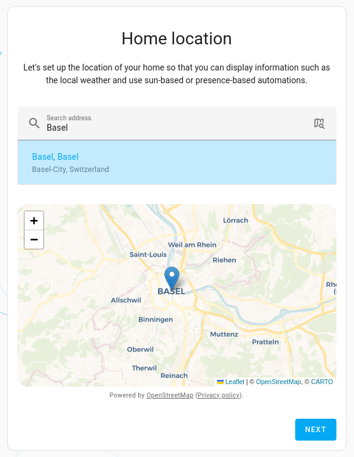

Welcome to project HARP!
In the days of the Internet of Things, it is common to have a lot of smart devices at home. These devices are usually controlled by different apps, which makes it difficult to manage them. Home Assistant is an open-source home automation platform that allows you to control all your smart devices from a single interface. It is a great tool to manage your smart home devices, but it can also be used to automate your home.
Home Assistant also provides integration with Amazon Alexa and Google Assistant, which allows you to control your smart home devices using voice commands. Apple HomeKit integration is also available, by using the Home Assistant Homebridge plugin. This allows you to control your smart home devices using Siri. With all these integrations, you can unify all your smart home devices under a single interface and control them using voice commands.
This project is a step-by-step tutorial that will teach you how to setup a Raspberry Pi with Home Assistant to control your smart home devices. You will learn the following:
- How to setup a Raspberry Pi
- Install Raspberry Pi OS
- Expand Filesystem
- Increase Swap Size
- Install Docker
- How to setup Home Assistant
- How to install the Home Assistant Sky Connect
- How to expose Home Assistant to the Internet
- Setup DuckDNS
- Setup Swag
Hopefully, by the end of this tutorial, you will have a fully functional Home Assistant setup that you can use to control your smart home devices. Enjoy!
For this project, you will need the following:
- A Raspberry Pi (at least version 3)
- A microSD card (at least 32GB class 10)
- A power supply for the Raspberry Pi (please use the official Raspberry Pi power supply)
- Home Assistant Sky Connect for Zigbee (optional)
Raspberry Pi
The Raspberry Pi is a small single-board computer that can be used for a variety of projects. It is a great tool for learning about computers and programming. It is also a great tool for building your own smart home. The Raspberry Pi is a very popular platform for home automation projects, because it is cheap and easy to use. It is also very easy to connect to other devices, such as sensors and actuators.
For this project you will need at least a Raspberry Pi 3. At the time of writing this tutorial, the latest version of the Raspberry Pi is the Raspberry Pi 5. You can follow the links below with more information about the different Raspberry Pi models, that you can use for this project:
- https://www.raspberrypi.com/products/raspberry-pi-3-model-b/
- https://www.raspberrypi.com/products/raspberry-pi-3-model-b-plus/
- https://www.raspberrypi.com/products/raspberry-pi-4-model-b/
- https://www.raspberrypi.com/products/raspberry-pi-5/
In those links you have also information on how to buy a Raspberry Pi from the official resellers on your country.
MicroSD card
Your Raspberry Pi needs an SD card to store all its files and the Raspberry Pi OS operating system.
For this project and taking into account future expansion, I recommend using a microSD card with at least 32GB of storage. You can use any microSD card, but it is recommended to use a class 10 microSD card.
A good example is the SanDisk 32GB Ultra MicroSDHC C10 A1. It should look like the following:

You can find is easily on Amazon or other online stores.
Power supply
The Raspberry Pi needs a power supply to work. You can use any power supply that provides the correct voltage and amperage, but it is recommended to use the official Raspberry Pi power supply. You can find it also in your official reseller or on Amazon or other online stores.
The official power supplies usually have a Raspberry Pi logo on them.


For the official power supply follow the link below:
- Raspberry Pi 3 - https://www.raspberrypi.com/products/raspberry-pi-universal-power-supply/
- Raspberry Pi 4 - https://www.raspberrypi.com/products/type-c-power-supply/
- Raspberry Pi 5 - https://www.raspberrypi.com/products/27w-power-supply/
Home Assistant Sky Connect
The Home Assistant Sky Connect is a Zigbee gateway that allows you to connect Zigbee devices to Home Assistant. It is based on the CC2531 chip and it is compatible with the Zigbee2MQTT project. It is a great tool to connect Zigbee devices to Home Assistant, has a low price and is ease to use.
It should come in a box similar to the following:

You can find more information about the Home Assistant Sky Connect on the following link:
In order to install Home Assistant on your Raspberry Pi, you first need to install the Raspberry Pi OS operating system. The Raspberry Pi OS is a Linux distribution based on Debian. It is the official operating system for the Raspberry Pi and it is the recommended operating system for this project.
Install Raspberry Pi Imager
The easiest way to install the Raspberry Pi OS is to use the Raspberry Pi Imager tool. This tool allows you to download and install the Raspberry Pi OS on your microSD card. You can download the Raspberry Pi Imager tool from the official Raspberry Pi website:
Choose the Raspberry Pi Imager tool for your operating system. You can find versions for Windows, macOS and Ubuntu.
Flash Raspberry Pi OS
After installing the Raspberry Pi Imager tool, you can use it to flash the Raspberry Pi OS into your microSD card. Once you've installed Imager, launch the application by clicking the Raspberry Pi Imager icon or running rpi-imager.

Click Choose device and select your Raspberry Pi model from the list.
Next, click Choose OS and select an operating system to install. Imager always shows the recommended version of Raspberry Pi OS for your model at the top of the list.
Connect your preferred storage device to your computer. For example, plug a microSD card in using an external or built-in SD card reader. Then, click Choose storage and select your storage device.

Next, click Next.
In a popup, Imager will ask you to apply OS customisation. We will configure the Raspberry Pi via the OS customisation settings. Click the Edit Settings button to open OS customisation.
OS customisation
The OS customisation menu lets you set up your Raspberry Pi before first boot. You can preconfigure:
- a username and password
- WiFi credentials
- the device hostname
- the time zone
- your keyboard layout
- remote connectivity
When you first open the OS customisation menu, you might see a prompt asking for permission to load WiFi credentials from your host computer. If you respond "yes", Imager will prefill WiFi credentials from the network you're currently connected to. If you respond "no", you can enter WiFi credentials manually.
The hostname option defines the hostname your Raspberry Pi broadcasts to the network using mDNS. When you connect your Raspberry Pi to your network, other devices on the network can communicate with your computer using {{hostname}}.local or {{hostname}}.lan.
The username and password option defines the username and password of the admin user account on your Raspberry Pi.
The wireless LAN option allows you to enter an SSID (name) and password for your wireless network. If your network does not broadcast an SSID publicly, you should enable the "Hidden SSID" setting. By default, Imager uses the country you're currently in as the "Wireless LAN country". This setting controls the WiFi broadcast frequencies used by your Raspberry Pi. Enter credentials for the wireless LAN option if you plan to run a headless Raspberry Pi.
The locale settings option allows you to define the time zone and default keyboard layout for your Pi.
The Services tab includes settings to help you connect to your Raspberry Pi remotely.
Since we are going to use your Raspberry Pi remotely over the network, check the box next to Enable SSH.
- Choose the password authentication option to SSH into your Raspberry Pi over the network using the username and password you provided in the general tab of OS customisation.
- Choose Allow public-key authentication only to preconfigure your Raspberry Pi for passwordless public-key SSH authentication using a private key from the computer you're currently using. If already have an RSA key in your SSH configuration, Imager uses that public key. If you don't, you can click Run SSH-keygen to generate a public/private key pair. Imager will use the newly-generated public key.

OS customisation also includes an Options menu that allows you to configure the behaviour of Imager during a write. These options allow you to play a noise when Imager finishes verifying an image, to automatically unmount storage media after verification, and to disable telemetry.

Write
When you've finished entering OS customisation settings, click Save to save your customisation.
Then, click Yes to apply OS customisation settings when you write the image to the storage device.
Finally, respond Yes to the "Are you sure you want to continue?" popup to begin writing data to the storage device.

If you see an admin prompt asking for permissions to read and write to your storage medium, it's safe to proceed.
Grab a cup of coffee or go for a walk. This could take a few minutes.
If you want to live especially dangerously, you can click cancel verify to skip the verification process.
When you see the "Write Successful" popup, your image has been completely written and verified. You're now ready to boot a Raspberry Pi from the storage device!
That's it you are now ready too boot your Raspberry Pi. Insert the microSD card into the Raspberry Pi and connect the power supply. The Raspberry Pi should boot, wait a bit for the first boot to complete. Connect to your Raspberry Pi using SSH in your terminal:
ssh wintermute@hal9000.local
You should see a screen like the following

In order to use the full capacity of your microSD card, you need to expand the filesystem. To do this, first, if you have not done it yet, login to your Raspberry Pi using SSH.
ssh wintermute@hal9000.local
Then run the following command:
sudo raspi-config nonint do_expand_rootfs
This will expand your installation to fill the whole SD card, giving you more space to use for files. You will need to reboot the Raspberry Pi to make this available. You can do this by running the following command:
sudo reboot
The swap file is used to increase the system's total accessible memory beyond its hardware capabilities.
This means that when all of the Raspberry Pi's RAM is exhausted, it can start using the swap file as memory instead.
The addition of more virtual memory allows the system to deal with more memory intensive tasks without running into out of memory errors or having to shut down other additional packages.
However, the downside to this is that accessing the swap file is a significantly slower process that can create slowdowns.
The reason for this is that the swap file exists on your actual disk, which has significantly lower read and write speeds then your RAM.
Another caveat of a large swap file is that you need that space to be free on your SD Card. You can't set a swap file on your Raspberry Pi larger than your available free space.
With the introduction of the Raspberry Pi 4, there has been less of a need to use a swap file due to the large amounts of RAM available. So if you're using a Raspberry Pi 4 or newer, you may not need to increase the swap file.
In this section, we will be showing you the process of increasing the swap file on the Raspberry Pi.
Before beginning this section, make sure you aren't running anything that's heavily using the memory. The reason for this is that it could potentially already be using the swap file that we are about to change.
- If you have not done it yet, login to your Raspberry Pi using SSH.
ssh wintermute@hal9000.local
- Before we can increase our Raspberry Pi's swap file, we must first temporarily stop it.The swap file cannot be in use while we increase it. To stop the operating system from using the current swap file, run the following command.
sudo dphys-swapfile swapoff
- Next, we need to modify the swap file configuration file.We can open this file using nano by using the command below.
sudo nano /etc/dphys-swapfile
- Within this config file, find the following line of text.You can use CTRL + W to search for text within the file.
CONF_SWAPSIZE=100
To increase or decrease the swap file, all you need to do is modify the numerical value you find here. This number is the size of the swap in megabytes. For example, if we wanted to increase our swap size to 1GB, we would change that line to the following.CONF_SWAPSIZE=1024
- Once you have made the change, save the file by pressing CTRL + X, followed by Y, then ENTER.
- We can now re-initialize the Raspberry Pi's swap file by running the command below.Running this command will delete the original swap file and recreate it to fit the newly defined size.
sudo dphys-swapfile setup
- With the swap now recreated to the newly defined size, we can now turn the swap back on.To start the operating systems swap system, run the following command.
sudo dphys-swapfile swapon
While the new swapfile is now switched on, programs will not know that this new memory exists until they restart. - If you want all programs to be reloaded with access to the new memory pool, then the easiest way is to restart your device.To restart your Raspberry Pi, all you need to do is run the command below.
sudo reboot
We hope you have successfully learned how to increase and decrease the swap file on your Raspberry Pi.
In order to install Home Assistant, we will use Docker. Docker is a tool that allows you to run applications in a container on your Raspberry Pi. It is a great tool to run applications in a sandboxed environment, without affecting the rest of the system. It is also a great tool to run applications that are not available for your operating system.
Installing Docker to the Raspberry Pi
Thanks to a nifty install script developed by the Docker team, installing the container software is incredibly simple.
- First we need to login to our Raspberry Pi using SSH, if you have not done it yet.
ssh wintermute@hal9000.local
- Now first of all we need to make sure that our system is up-to-date before we proceed to install Docker.We can upgrade all existing packages by running the following two commands on the Raspberry Pi.
sudo apt update sudo apt upgrade
- With our Raspberry Pi entirely up to date, we can now go ahead and install Docker to the Raspberry Pi.Luckily for us, Docker has made this process incredibly quick and straightforward by providing a bash script that installs everything for you.You can download and run the official Docker setup script by running the following command.
curl -sSL https://get.docker.com | sh
This command will pipe the script directly into the command line. Typically it would be best if you didn't do this; however, Docker is a trusted source.If you are unsure about running this directly without first inspecting it, you can go directly to get.docker.com to view the script.This script can take some time to complete as it automatically detects and installs everything it needs to run Docker on the Raspberry Pi.
Setting up your User for Docker
We need to make a slight adjustment to our user before we can start using Docker without issues.
This is to do with the way that the Linux permission system works with Docker. By default, only the Docker user can interact with Docker but there is a way to work around this.
- Once Docker has finished installing to your Raspberry Pi, there are a couple more things we need to do.For another user to be able to interact with Docker, it needs to be added to the docker group.So, our next step is to add our current user to the docker group by using the usermod command as shown below. By using "$USER" we are inserting the environment variable that stores the current users name.
If we don't add our user to the group, we won't be able to interact with Docker without running as the root user.If you want to learn more about permissions and groups in Linux, check out our file permissions in Linux guide.sudo usermod -aG docker $USER - Since we made some changes to our user, we will now need to log out and log back in for it to take effect.You can log out by running the following command in the terminal.
logout
- Once you have logged back in, you can verify that the docker group has been successfully added to your user by running the following command.
groups
This command will list out all the groups that the current user is a part of. If everything worked as it should, the group docker should be listed here.
Testing the Docker Installation on Raspberry Pi
With Docker now set up on our Raspberry Pi, we should now go ahead and test to make sure it's working.
- To test if Docker is working, we are going to go ahead and run the following command on our Pi.This command will tell Docker to download, setup and run a docker container called hello-world.
docker run hello-world
- If you have successfully installed Docker to your Raspberry Pi, you should see something like this.

You are now safe to start using Docker for your projects. Have fun!
Now that we have Docker installed, we can install Home Assistant. To do this, first, if you have not done it yet, login to your Raspberry Pi using SSH.
ssh wintermute@hal9000.local
We are going to use docker-compose to install Home Assistant. Docker Compose is a tool that allows you to define and run multi-container Docker applications. It is a great tool to run multiple Docker containers at the same time. We will start by moving to the home directory.
cd ~
Then we will create a directory to store the docker compose files and move to that directory.
mkdir -r docker/homeassistant cd docker/homeassistant
Now we will create a file called compose.yml.
touch compose.yml
And we will edit the file using nano.
nano compose.yml
And we will add the following content to the file:
version: '3'
services:
homeassistant:
container_name: homeassistant
image: "ghcr.io/home-assistant/home-assistant:stable"
volumes:
- ${HOME}/homeassistant/config:/config
- /etc/timezone:/etc/timezone:ro
- /etc/localtime:/etc/localtime:ro
- /run/dbus:/run/dbus:ro
environment:
- TZ=Europe/Lisbon
restart: unless-stopped
privileged: true
network_mode: host
You can copy it from here and paste it in the file.
Note that you will need to change the TZ environment variable to your timezone. You can find a list of timezones here:
To save the file press CTRL + X, followed by Y, then ENTER.
Now we can start Home Assistant by running the following command:
docker compose up -d
Wait for a few minutes for Home Assistant to start. You can check the logs by running the following command:
docker compose logs -f
Or for checking only the logs for Home Assistant container:
docker compose logs -f homeassistant
Navigate to http://hal9000.local:8123 and you should see the Home Assistant welcome screen.

- Select Create my smart home.
- Enter a name, username, and password and select Create account.

- Enter the location of your home. 
- Select which information you are willing to share.

- Once you are done click Next.

- Finally, select Finish to enter the Home Assistant web interface.
You should now see the Home Assistant dashboard, and you are ready to start adding devices.
Sky Connect is a Zigbee gateway that allows you to connect Zigbee devices to Home Assistant. It is based on the CC2531 chip and it is compatible with the Zigbee2MQTT project. It is a great tool to connect Zigbee devices to Home Assistant, has a low price and is ease to use.
To install Sky Connect we will need to adapt the docker-compose file we created in the previous step, in order to give the Home Assistant container access to the USB port where Sky Connect is connected. To do this, first, if you have not done it yet, login to your Raspberry Pi using SSH.
ssh wintermute@hal9000.local
Now navigate to the directory where you created the compose.yml file.
cd ~/docker/homeassistant
And stop Home Assistant by running the following command:
docker compose down
Now connect Sky Connect to the Raspberry Pi USB port. Give it a few seconds to be detected by the Raspberry Pi. You can issue the following command to check if it was detected:
lsusb
You should see an output similar to the following:

Now issue the following command to check to which ttyUSB port Sky Connect was connected:
ls /dev/ttyUSB*
You should see an output similar to the following:
Now we have all the information we need to adapt the compose.yml file. Open the compose.yml file using nano for editing.
nano compose.yml
You will need to add a mapping for devices so that the container can access the host USB port.
devices:
- /dev/ttyUSB0:/dev/ttyUSB0
You should end up with a file similar to the following:
version: '3'
services:
homeassistant:
container_name: homeassistant
image: "ghcr.io/home-assistant/home-assistant:stable"
volumes:
- ${HOME}/homeassistant/config:/config
- /etc/timezone:/etc/timezone:ro
- /etc/localtime:/etc/localtime:ro
- /run/dbus:/run/dbus:ro
environment:
- TZ=Europe/Lisbon
devices:
- /dev/ttyUSB0:/dev/ttyUSB0
restart: unless-stopped
privileged: true
network_mode: host
To save the file press CTRL + X, followed by Y, then ENTER.
Now we can start Home Assistant by running the following command:
docker compose up -d
Wait for a few minutes for Home Assistant to start and navigate to http://hal9000.local:8123. Enter your credentials to enter the Home Assistant dashboard.
On the left menu, click on Configuration and then on Devices & Services. By now you should see the Sky Connect device listed, as it was automatically detected by Home Assistant.

Select Configure. You should see the following screen:

Select Submit. You should see the following screen:

Select Create Network. Once the network has been set up you should see the following screen:
Add the Zigbee Coordinator to an area and Select Finish. Your Zigbee devices are now added to your Zigbee network.
Now you can add your Zigbee devices to Home Assistant. To do this, on Configuration > Devices & Services look for Zigbee Home Automation. You should see the following screen:
Click on 1 device and select Add devices via this device. ZHA will now search for Zigbee devices in pairing mode. When detected follow the configurations steps and you should be ready to go!
If you want to control your smart home devices from outside your home network, you will need to expose Home Assistant to the Internet. Also, some integrations require Home Assistant to be exposed to the Internet.
To expose Home Assistant to the Internet, we will use the DuckDNS and SWAG. DuckDNS is a free service that allows you to create a subdomain and associate it with your public IP address. SWAG sets up a Nginx webserver and reverse proxy with php support and a built-in certbot client that automates free SSL server certificate generation and renewal processes (Let's Encrypt and ZeroSSL). SWAG also contains fail2ban for intrusion prevention.
With these two tools, we will be able to expose Home Assistant to the Internet using a secure connection.
Setup DuckDNS
First, we need to create a DuckDNS account. You can do this by going to the following link:
You should see a screen similar to the following:

Create an account, or login if we already have one. After that, something like this should appear:

Copy the token and save it, you will need it later.
Create a domain name. You can use any name you want, but it is recommended to use a name that is easy to remember. In this example, we will use my-domain.
After this we need to keep DuckDNS in sync with our public IP address, so that when we access our domain name, we are redirected to our public IP address. To do this, we will use DuckDNS integration provided by Home Assistant.
As first step login to your Raspberry Pi using SSH.
ssh wintermute@hal9000.local
Now enter the Home Assistant container by running the following command:
docker exec -it homeassistant bash
You will land in the Home Assistant container shell inside the /config directory. Now we need to edit the configuration.yaml file. To do this, run the following command:
vi configuration.yaml
At the end of the file add the following lines:
duckdns:
domain: {{your duckdns domain}}
access_token: {{your duckdns token}}
Replace {{your duckdns domain}} with the domain name you created in the previous step and {{your duckdns token}} with the token you copied in the previous step.
So as an example, if your domain name is my-domain and your token is 12345678-1234-1234-1234-123456789012, you should end up with something like this:
duckdns:
domain: my-domain
access_token: 12345678-1234-1234-1234-123456789012
Now save the file by pressing ESC, followed by :, then w, then q, then ENTER.
Exit the Home Assistant container by running the following command:
exit
Now restart Home Assistant by running the following commands:
docker compose down docker compose up -d
You should now have DuckDNS integration working.
Setup Swag
Now that we have DuckDNS integration working, we can setup Swag. As first step login to your Raspberry Pi using SSH.
ssh wintermute@hal9000.local
Now navigate to the directory where you created the compose.yml file.
cd ~/docker/homeassistant
And stop Home Assistant by running the following command:
docker compose down
Wait for it to stop and then edit the compose.yml file using nano.
nano compose.yml
Add the following lines to the compose.yml file:
swag:
container_name: swag
image: linuxserver/swag
restart: unless-stopped
cap_add:
- NET_ADMIN
volumes:
- ${HOME}/swag/config:/config
- /etc/timezone:/etc/timezone:ro
- /etc/localtime:/etc/localtime:ro
environment:
- PGID=1000
- PUID=1000
- EMAIL={{your email}}
- URL={{your duckdns domain}}.duckdns.org
- SUBDOMAINS=wildcard
- VALIDATION=duckdns
- TZ=Europe/Lisbon
- DUCKDNSTOKEN={{your duckdns token}}
ports:
- 180:80
- 1443:443
# set trusted docker internal network
networks:
default:
ipam:
config:
- subnet: 172.10.0.0/24
Replace {{your email}} with your email address that you used to create the DuckDNS account, {{your duckdns domain}} with the domain name you created in the previous step and {{your duckdns token}} with the token you copied in the previous step.
After that save the file by pressing CTRL + X, followed by Y, then ENTER.
Now start Home Assistant by running the following command:
docker compose up -d
If all goes well you should now have SWAG running. You can check the logs by running the following command:
docker compose logs -f swag
You should see something like this, stating that all went well:
swag | [services.d] starting services
swag | [services.d] done.
swag | Server ready.
Now we need to configure SWAG Nginx server. First check the IP address of your Raspberry Pi by running the following
ip a | grep -E 'wlan0|eth0'
You should see something like this:

Note that we have two IP addresses, one for the eth0 interface corresponding to the Ethernet port and one for the wlan0 interface corresponding to the WiFi port. Always prefer the eth0 interface, as it is more stable.
In this case the IP address is 192.168.1.142, save this information, you will need it later.
Now enter the SWAG container by running the following command:
docker exec -it swag bash
You will land in the SWAG container shell inside the root / directory. Navigate to /config/nginx/proxy-confs directory by running the following command:
cd /config/nginx/proxy-confs
There you will find a file called homeassistant.subdomain.conf.sample. Copy it to a new file called homeassistant.subdomain.conf by running the following command:
cp homeassistant.subdomain.conf.sample homeassistant.subdomain.conf
Normally, in docker-compose, SWAG/NGINX would know the IP address of home assistant But since it uses ‘net mode' we need to tell it the IP address of home assistant. To do this issue the following command:
sed -i 's/set $upstream_app homeassistant;/set $upstream_app 192.168.1.142;/' homeassistant.subdomain.conf
Don't forget to replace 192.168.1.142 with the IP address of your Raspberry Pi that you got earlier.
Exit the SWAG container by running the following command:
exit
Now enter the Home Assistant container by running the following command:
docker exec -it homeassistant bash
You will land in the Home Assistant container shell inside the /config directory. Now we need to edit the configuration.yaml file. To do this, run the following command:
vi configuration.yaml
Before duckdns configuration add the following lines:
http:
ip_ban_enabled: true
login_attempts_threshold: 3
use_x_forwarded_for: true
trusted_proxies:
- 192.168.1.0/24 # Local Lan
- 172.10.0.0/24 # Docker network
Note that you will need to replace 192.168.1.0 with the equivalent IP address of your local network. If your local network is 192.168.XXX.YYY you will need to replace it with 192.168.XXX.0.
Save the file by pressing ESC, followed by :, then w, then q, then ENTER.
Exit the Home Assistant container by running the following command:
exit
Now restart all containers by running the following commands:
docker compose down docker compose up -d
Wait for a few minutes for everything to start. You are now ready from the Home Assistant side. The last thing missing is to configure your router to forward the ports 80 and 443 to your Raspberry Pi IP address. Please refer to your router manual on how to do this.
After this, you should be able to access Home Assistant from the Internet. To do this, navigate to https://homeassistant.my-domain.duckdns.org. You should see the Home Assistant login screen.
Note that you will need to replace my-domain with the domain name you created on DuckDNS.